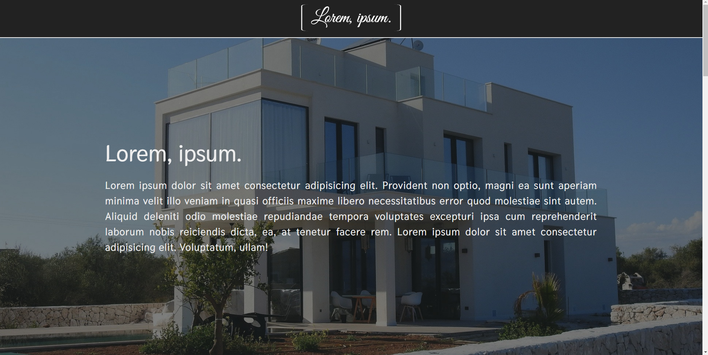

Coś o mnie...

Cześć! Nazywam się Eryk Winnicki, mam 19 lat oraz mieszkam w niewielkiej miejscowości niedaleko Warszawy. Pasja do pisania stron internetowych narodziła się momentalnie po tym jak z ciekawości obejrzałem pierwszy poradnik HTML i CSS na youtube. Na samym początku uczyłem się tylko tych właśnie technologii, ale ciekawość nie dawała mi spokoju i zacząłem zagłębiać się w temat jezyka programowania jakim jest JavaScript. Po jakimś czasie postanowiłem uczyć się również frameworka React. Do dnia dzisiejszego napisałem kilka samodzielnych projektów, które możesz zobaczyć w sekcji "Moje projekty" oraz na githubie, do którego link znajdziesz na dole strony. W tym momencie czuję się już na siłach, aby starać się o pierwszą pracę jako junior front-end developer dlatego postanowiłem podzielić się Moimi projektami oraz zachęcić potencjalnych pracodawców do dania Mi szansy. Do zobaczenia!
Moje umiejętności:
Od HTML(HyperText Markup Language) oraz CSS(Cascading Style Sheets) wszystko się zaczęło, dlatego znam HTML bardzo dobrze, piszę kod wydajny, prosty do odczytu oraz w pełni poprawny semantycznie.

CSS jest to technologia, z którą miałem styczność od samego początku Mojej przygody z tworzeniem stron internetowych. Umiem pisać strony w pełni responsywne, działające dobrze na wszystkich najpopularniejszych przeglądarkach

JavaScript jest to technologia, w której czuję się najlepiej, głównie korzystam z programowania funkcyjnego, ale jestem również chętny do poznania nieco głębiej OOP(Object Oriented Programming). Posiadam solidne podstawy bibiloteki JavaScript jaką jest React

Ze wszystkich poznanych technologii najmniejszą styczność mam z Reactem, ale znam jego podstawowe funkcje, umiem napisać aplikację w create react app oraz mam solidne podstawy React Router. W przyszłości chciałbym, aby React był Moją główną technologią
Potrafię korzystać z najpopularniejszego systemu kontroli wersji jakim jest Git jak i serwisu Github. Nie obce są mi tematy commitów oraz branchów. Korzystam głównie z git basha, ale znam również Powershella
Ulubione cytaty...
"Talk is cheap. Show me the code!"
"There is no elevator to success. You have to take the stairs"
"Time isn't the main thing. It's the only thing."
Moje projekty:
Template firmy budowlanej:
Live
Kod
Responsywny tempalate firmy budowlanej, z prostymi animacjami napisanymi w JavaScript. Sam wygląd strony został stworzony za pomocą HTML oraz CSS.
Pierwsza strona wizytówka:

Live
Kod
Moja pierwsza strona wizytówka napisana podczas kursu "Web developer od podstaw w 15 dni" w HTML i CSS.